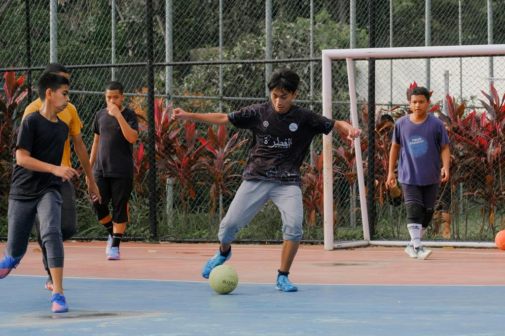

Oportunidades reais para jovens talentos brilharem nos maiores clubes de São Paulo. Comece sua trajetória rumo ao profissionalismo agora.

Peneiras dos gigantes paulistas e mais:
 guesa
São C
guesa
São C
 aetano
Corin
aetano
Corin
 thians
Red Bull B
thians
Red Bull B
 ragantino
ragantino
Veja como funcionam as avaliações e o que os olheiros buscam em um atleta de elite.
Filtramos as peneiras de acordo com a sua idade.
Construído para atletas. Pensado para o seu próximo passo.
São Paulo, Palmeiras, Corinthians, Santos e mais.

Filtre peneiras pela sua região. Capital, ABC e Interior.
Datas, horários e requisitos verificados.